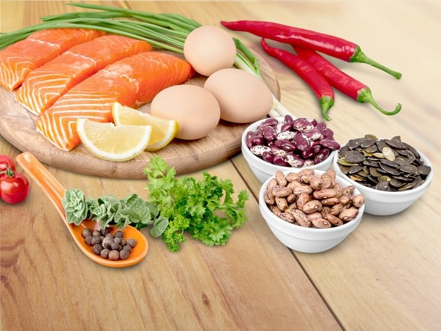
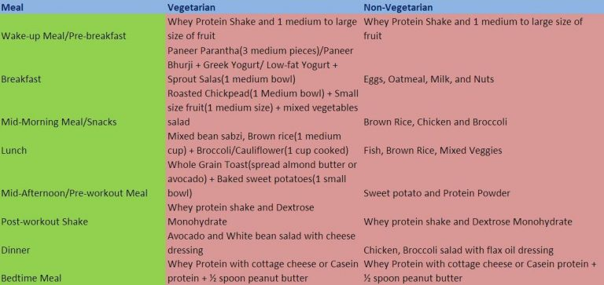
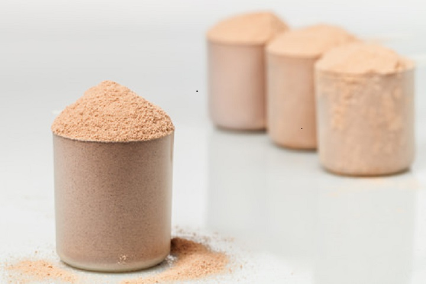

DIET PLAN
Protein Consumption:
We Indians often believe that high-protein diets are dangerous to kidney and overall health. And due to which quite frequently we completely overlook the importance of dietary protein in our dishes. A study conducted with an explicit aim to find a relation between protein intake and kidney function found that healthy individuals (with no pre-existing renal disease) showed no signs of harm in renal function upon consuming over 2.0 grams of protein per kg of bodyweight. Another research set to examine the safety concerns for athletes and bodybuilders with high-protein diet concluded that no link could be made between high protein diets and heart disease. To sum up, following what the recent studies say, high-protein diet (above 1 gram of protein per pound of bodyweight) do not show adverse health risks, at least for healthy individuals, athletes, and bodybuilders.

Carbs Consumption:
You may have always wondered how many carbs I should really take to build muscles. Well, that’s quite easy to determine. Fact – 1 gram of carbohydrate contains four calories. Now assume that you probably need around 3000 calories per day to get bigger. If we go by the recommendations, your daily calorie intake should comprise of 45%-55% of calories from carbs. Calculating by simple math, we get 375 grams of carbs every day. However, everyone has different calorie intake (hence different carb intake ratio) based on their goals, fitness level, and metabolic rate.Fats Consumption:
Like carbs, fats also makes you feel full after a meal. Eating unprocessed fats found in nuts, olives, and avocados should be highly preferred over processed fat and oil products. At least 10%-20% of your total calories should come from healthy fats like polyunsaturated and monounsaturated fats along with saturated fat found in egg yolks, cheese, and other poultry items. Related Article: Indian Diet for Six Pack Abs to Build Cutting Abs Vitamin And Fibre Consumption: Stop me if it sounds wrong, vitamins are so underrated in every bodybuilder’s diet. All you think about is protein and more protein which eventually leads to the negligence of micronutrient, especially vitamins. But now you will have to take some time and plan your micro nutrients now before it gets too late. One of the very vital vitamins that every Indian bodybuilder and athlete should get is Vitamin D. It is helpful in strengthening bone, brain health, protein synthesis, and hormone synthesis. Other important vitamins that no bodybuilder should ignore are Vitamins B, C, and E. Similarly, fibres are very crucial part of every Indian bodybuilder’s diet plan. Fibres have a broad range of benefits including – decreasing LDL levels, fighting against cancer, stabilizing blood sugar levels and killing constipation.Vitamin And Fibre Consumption:
Stop me if it sounds wrong, vitamins are so underrated in every bodybuilder’s diet. All you think about is protein and more protein which eventually leads to the negligence of micronutrient, especially vitamins. But now you will have to take some time and plan your micro nutrients now before it gets too late. One of the very vital vitamins that every Indian bodybuilder and athlete should get is Vitamin D. It is helpful in strengthening bone, brain health, protein synthesis, and hormone synthesis. Other important vitamins that no bodybuilder should ignore are Vitamins B, C, and E. Similarly, fibres are very crucial part of every Indian bodybuilder’s diet plan. Fibres have a broad range of benefits including – decreasing LDL levels, fighting against cancer, stabilizing blood sugar levels and killing constipation.
If you are not OK with the above image, here is the briefed table for you:
| Meal | Vegetarian | NOn-vegetarian |
|---|---|---|
| Wakeup Meal/ Pre-Breakfast | Whey Protein Shake and Medium to large size of fruit | Whey Protein Shake and 1 Medium to large size of fruit |
| Breakfast | Paneer Parantha(3 medium peices)/Paneer Bhurji + Greek Yogurt/ Low-fat Yogurt + Sprout Salad(1 medium bowl) | Eggs, Oatmeal, Milk and Nuts |
| Mid-Morning Meal/Snacks | Roasted Chickpeas(1 Medium Bowl) + Small size fruit(1 medium size) + mixed vegetables salad | Brown Rice, Chicken and Broccoli |
| Lunch | Mixed bean sabzi, Brown rice(1 medium cup) + Broccoli/Cauliflower(1 cup cooked) | Fish, Brown Rice and Mixed Veggies |
| Mid-Afternoon/Pre-workout Meal | Whole Grain Toast(Spread almond butter or avocado) + Baked sweet potatoes(1 small bowl) | Sweet Potato and Protein Powder |
| Post-Workout Shake | Whey Proten Shake and Dextrose Monohydrate | Whey Proten Shake and Dextrose Monohydrate |
| Dinner | Avocado and White bean salad with cheese dressing | Chicken Broccoli salad with Flax oil dressing |
| Bedtime Meal | Whey Protein with cottage cheese or Casein Protein + 1/2 spoon peanut butter | Whey Protein with cottage cheese or Casein Protein + 1/2 spoon peanut butter |
Meal 1: Wake-Up Meal/Pre-Breakfast
Nutrient Groups: Fast Protein + High GI Fruits What to Eat:- Vegetarians: Whey Protein Shake and One medium to large size piece of fruit (preferably bananas or grapes)
- Non-Vegetarians: Whey Protein Shake and One medium to large size piece of fruit (preferably bananas or grapes)
Meal 2: Breakfast
Nutrient Groups: Protein + Low GI carbs or Slow Digesting Carbs + Healthy FatsWhat to Eat:
- Vegetarians: Paneer Parantha (3 medium pieces)/Paneer Bhurji + Greek Yogurt/ Low-fat yogurt + sprout salad (1 medium bowl)
- Non-Vegetarians: Eggs, Oatmeal, Milk, and Nuts
Meal 3: Mid-Morning Meal/Snacks
Nutrient Groups: Protein + Slow acting carbs + VeggiesWhat to Eat:
- Vegetarians: Roasted chickpeas (1 medium bowl) + Small size fruit (1 medium size) + mixed vegetables salad
- Non-Vegetarians: Brown Rice, Chicken, and Broccoli
Meal 4: Lunch
Nutrient Groups: Protein + Slow acting carbs + VeggiesWhat to Eat:
- Vegetarians: Roasted chickpeas (1 medium bowl) + Small size fruit (1 medium size) + mixed vegetables salad
- Non-Vegetarians: Brown Rice, Chicken, and Broccoli
Meal 5: Mid-Afternoon/Pre-Workout Meal
Nutrient Groups: Protein + Slow acting carbs + VeggiesWhat to Eat:
- Vegetarians: Roasted chickpeas (1 medium bowl) + Small size fruit (1 medium size) + mixed vegetables salad
- Non-Vegetarians: Brown Rice, Chicken, and Broccoli

Meal 6: Post workout shake
Nutrient Groups: Protein + Slow acting carbs + VeggiesWhat to Eat:
- Vegetarians: Roasted chickpeas (1 medium bowl) + Small size fruit (1 medium size) + mixed vegetables salad
- Non-Vegetarians: Brown Rice, Chicken, and Broccoli
Meal 7: Dinner
Nutrient Groups: Protein + Slow acting carbs + VeggiesWhat to Eat:
- Vegetarians: Roasted chickpeas (1 medium bowl) + Small size fruit (1 medium size) + mixed vegetables salad
- Non-Vegetarians: Brown Rice, Chicken, and Broccoli
Meal 8: bedtime meal
Nutrient Groups: Protein + Slow acting carbs + VeggiesWhat to Eat:
- Vegetarians: Roasted chickpeas (1 medium bowl) + Small size fruit (1 medium size) + mixed vegetables salad
- Non-Vegetarians: Brown Rice, Chicken, and Broccoli